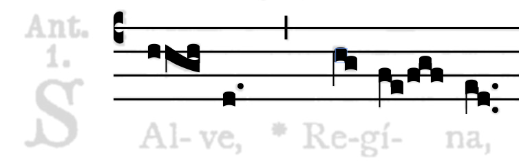

Neon
Posted by cmotuz on February 27, 2012
 Thanks to the tireless efforts of Gregory Burlet, SIMSSA has a new web application! It’s called the Neume Editor ONline (NEON), and it’s making a splash. Right now, NEON renders mei files of square-note notation into graphic form. In the above example from the demo, you can see how the application has rendered our file of the Salve Regina from the Liber Usualis into the neume shapes and pitches specified by the code. The shapes are modelled on those in the Finale medieval plug-in, to which Greg has added dots and is working on adding the more unusual shapes from the Liber Usualis.
But rendering is not all! The main goal of this application is to make it work backwards too. If you go to the demo and click on a neume, you’ll see that you can drag it around. Eventually, these edits will alter the mei source file, changing the pitches, neume types and other details automatically when the graphic is altered. The slider at the top of the page allows you to underlay the original file from which the mei code was made (using Optical Music Recognition), so that you can see where omissions and errors are creeping in. All in all, it’s quite similar to Aruspix, with the exception that being written in Javascript, it can be used to edit documents online, i.e. without downloading any applications.
The eventual goal of all of this is to allow people–by which I mean anyone interested–to easily fix the errors produced by Optical Music Recognition, which in turn will help OMR systems such as Gamera improve their algorithms. Laura’s work correcting Gamera’s errors in reading the Salzinnes manuscript is indispensable and will never fully be replaceable by computer. Especially as every document on which we run OMR will be a little different, OMR will always need a human to check it over. A Neume Editor Online allows this work to be crowdsourced, so anyone interesting in making and mending editions using OMR, such as the many contributors to cpdl and imslp, can help improve the system.